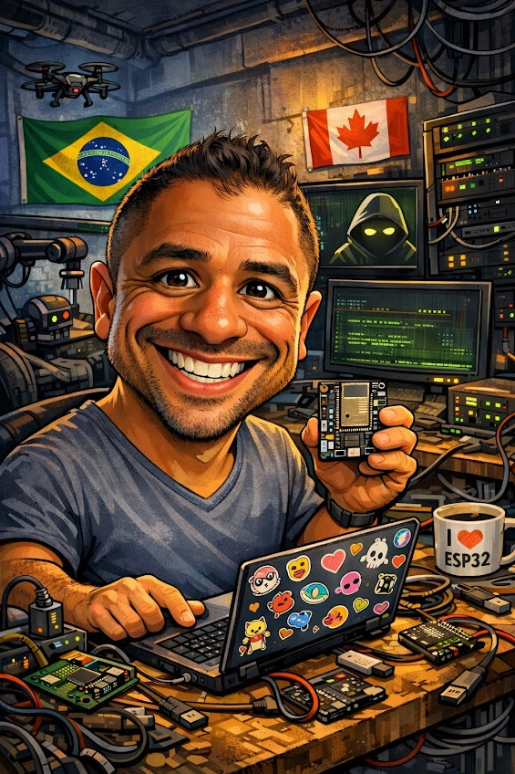
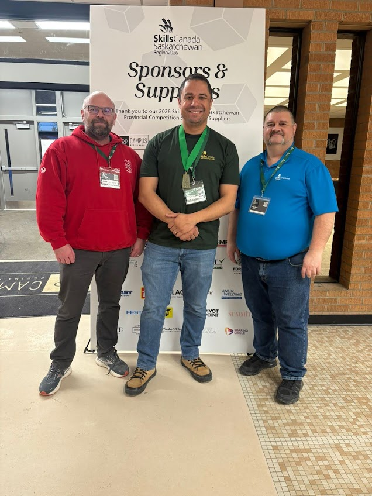
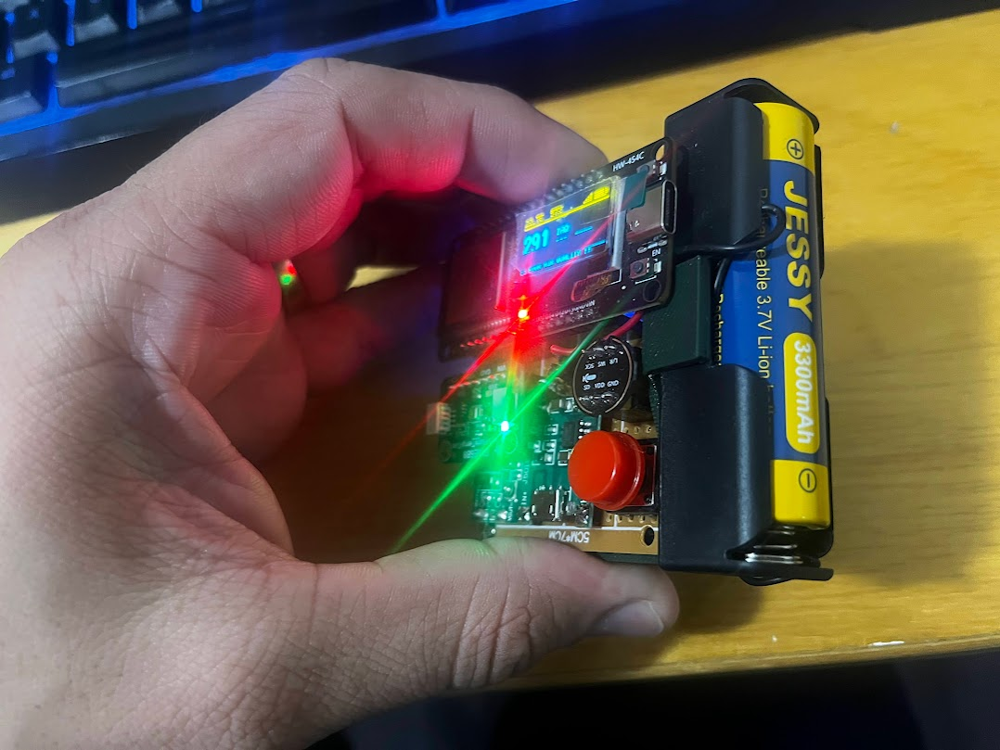
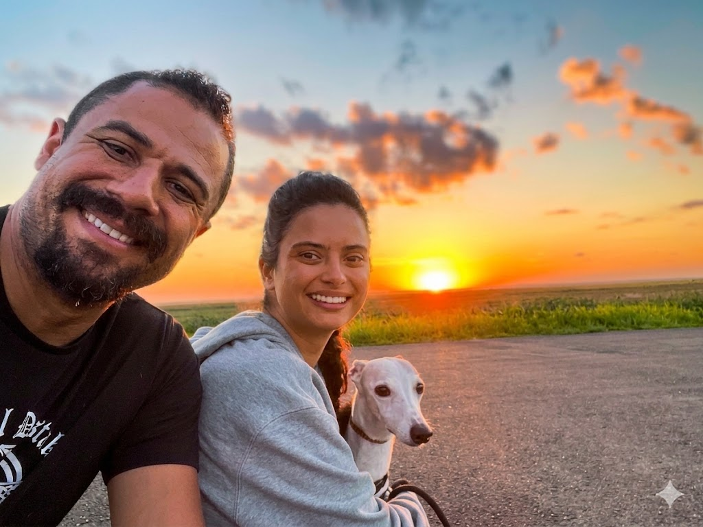

Computer Automated Systems Technician · Sask Polytech
Builder. Thinker. Technician.
I build things that solve real problems — from the breadboard to the PCB, from the firmware to the server. HIVIS Monitor is what happens when curiosity, a respirator concern, and a deadline all meet at once.


My Story
When I moved to Canada and started over, I made a decision: do something I actually love. I've always been drawn to computers and electronics — but until Sask Polytech, I had never had the chance to work in the field.
Before this, I managed teams. I understood systems, processes, and people. What I didn't have was the hands-on technical foundation — the ability to open up a device and understand exactly what's happening inside it. That's what this program gave me.
Graduating April 28th — and it's been worth every late night on the bench.
What I Work With
Why This Project

Working near furnaces and in basements, I kept wondering: is the air around me safe? There was no easy way to know. And as someone who used to manage teams, I thought about how companies are supposed to keep workers safe without affordable tools to measure exposure.
HIVIS Monitor grew from that question. Building it taught me that certified sensors cost what they do for a reason — but it also taught me how complete systems are built, end to end. The gap between planning and actually getting things done. Why both matter equally.
The result is a self-hosted, privacy-respecting air quality and acoustic monitor worn inside a hi-vis safety vest — designed for the workers who need it most.
See How It Was Built →What's Next
Questions about the project, collaboration ideas, or just want to talk electronics and IoT — reach out.
